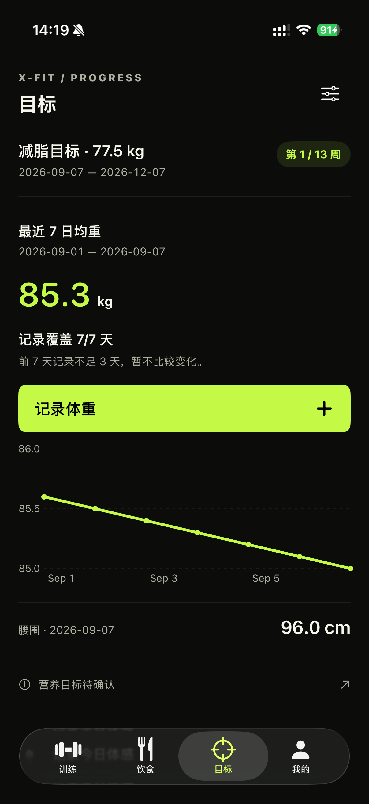

X-Fit · Goal page reference review
目标页先建立视觉语言，再进入正式重构
筛选标准是：真实产品的数据逻辑、强而克制的视觉焦点、正常字号下仍有层级。下方只提取设计方法，不复制品牌外观。
当前页为何显得粗糙

功能全部摊开，缺少一个能把目标讲清楚的视觉主体。
- 目标、当前均重、覆盖率与趋势分散，用户要逐行拼出结论。
- 整宽绿色按钮抢走了图表与目标本身的视觉重心。
- 折线图沿用默认坐标样式，和训练、饮食页的品牌语言不一致。
- 腰围、医学状态与训练执行继续使用菜单行，页面后半段像设置页。
四个有效参考


转译成 X-Fit 的三个方向
A推荐
目标轨迹
Gentler Streak 的视觉焦点 + MacroFactor 的数据边界。最符合“13 周减脂”这个单一主目标。
X-FIT / 目标第 1 / 13 周
减脂周期
最近 7 日均重
85.3 kg
记录 7/7
本周变化 −0.4 kg目标 77.5
训练执行3 / 3
腰围未记录
步数4,280
今日体感良好
B更运动
竞技仪表
WHOOP / 深色数据面板式表达。更强烈、更像运动设备，但目标故事略弱。
13 WEEK CUT06 SEP
本周状态
目标进度
1 / 13
当前 85.3目标 77.5 kg
体重趋势−0.4
覆盖率7 / 7
力量训练3 次
腰围—
C更风格化
编辑海报
延续训练页的 editorial 语言，用大色块和非对称版式；辨识度最高，但数据密度最低。
X-FIT / PROGRESS•••
目标
13 周减脂 · 第 1 周
85.3 → 77.5
06 SEP — 06 DEC
最近 7 日记录 7 / 7
建议选择 A。 它能在正常字号下做出明确的视觉中心，同时完整保留“七日均重、覆盖率、目标参照和数据不足不判断”的产品规则。B 更像设备仪表，C 更像品牌海报。
所有数值仅为隔离演示。参考图版权归原作者或产品所有；本页用于内部方向评审。